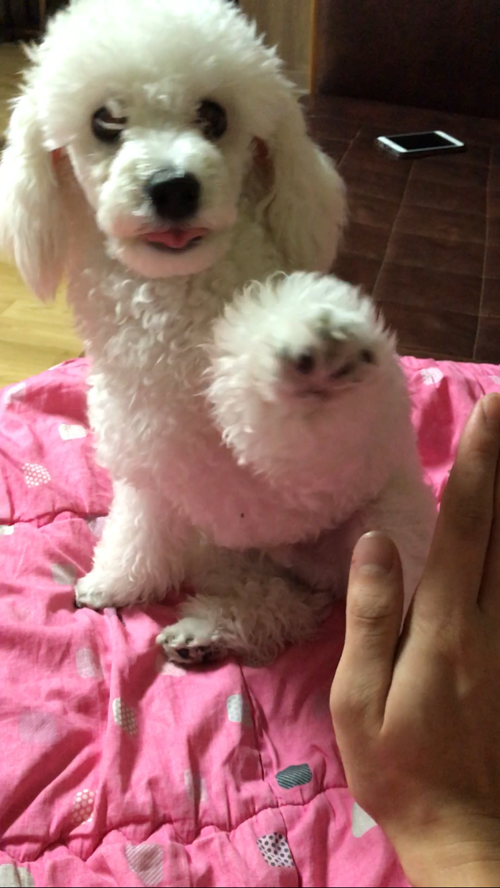

- 배변훈련
- 앉아 훈련
- 손 훈련
손 훈련 방법

- 간식을 들고 있는 것을 보여주고 간식을 손에 쥐고 있습니다.
- 강아지가 간식을 먹으려고 다가와 냄새를 맡아도 먹지 못하도록 손에 꼭 잡고 계세요
- 먹고 싶어서 낑낑거리거나, 신호를 보내면 손에 있던 간식을 줍니다.(2~3회 정도반복)
- 2~3회 이후에는 신호를 보내도 간식을 주지 않고, 손을 올리거나 손을 터치하면 앞발을 잡은채 간식을 줍니다.(5회이상반복)
- 계속 반복적으로 익숙해 졌다면 간식 없이, 간식을 가지고 있는 것처럼 반복행동을 하고 마찬가지로
손을 올렸다면 다른손을 간식을 입으로 전달해줍니다(5회 이상반복)